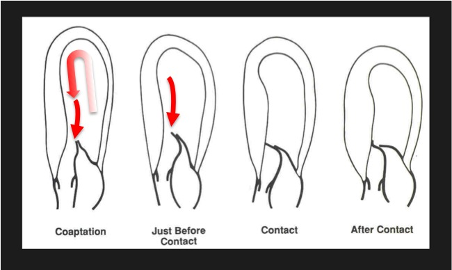

定義與定位
這個病是什麼？在分類樹的哪個位置？跟隔壁的病靠什麼分開？
| 項目 | 重點 |
|---|---|
| 本質 | 肌小節（sarcomere）蛋白基因突變，體染色體顯性遺傳、外顯率不完全 |
| 好發族群 | 任何年齡；肥厚不是出生就有，典型在青春期至成年逐漸長出來 |
| 分類位置 | 心肌症的「肥厚型」，與擴張型、限制型（見 Restrictive cardiomyopathy）並列 |
| 關鍵分型 | 阻塞型（HOCM，約 2/3） vs 非阻塞型——差別在有無 LVOT 壓差（休息或誘發後 ≥30 mmHg） |
病因與機制
為什麼會發生？病生理鏈條長什麼樣？
flowchart TD A["肌小節基因突變"] --> B["心肌細胞肥大<br/>排列紊亂與纖維化"] B --> C["心室壁增厚<br/>順應性下降"] B --> D["心律不整基質"] C --> E["舒張功能障礙<br/>填充壓上升"] C --> F["SAM 造成<br/>動態左室出口阻塞"] F --> G["用力時暈厥<br/>收縮期雜音"] D --> H["心室頻脈與猝死"] classDef key fill:#263238,stroke:#000,color:#fff,font-weight:bold class H key

收縮期連續影格：流出血流從僧帽瓣心室面推動前葉朝肥厚中膈移動，先接近、接觸，再造成動態 LVOT obstruction。現代解釋以 flow drag／pushing force 為主，單用 Venturi「吸過去」並不完整；SAM 同時讓瓣葉對合失常，常產生後向 MR jet。Source: Sherrid et al., J Am Heart Assoc 2020, Figure 1（CC BY-NC-ND 4.0）。臨床表現
典型病人長什麼樣？哪些症狀是幾乎一定有、哪些是提示性的？
- 典型：許多人終生無症狀；有症狀者以用力時呼吸困難最常見
- 提示性：用力當下的暈厥或前暈厥（與血管迷走性暈厥的關鍵區別）、胸痛（冠脈正常也會痛，因為心肌需氧量高＋微血管病變）、心悸
- 少見但重要：猝死為首發表現，尤其在年輕運動員；心房顫動（心房因填充壓高而擴大）會突然讓症狀惡化
→ 相關主訴流程：Chest pain↗、Dyspnea
診斷
| 診斷條件 | 內容 |
|---|---|
| 影像門檻 | 左心室壁厚 ≥15 mm（第一代親屬有 HCM 者 ≥13 mm） |
| 必要條件 | 找不到其他足以造成此肥厚的原因（高血壓、主動脈瓣狹窄、運動員心臟、浸潤性疾病） |
| 阻塞判定 | LVOT 壓差 ≥30 mmHg（休息或 Valsalva／運動誘發）＝阻塞型 |
| 遺傳 | 基因檢測用於確診與家族篩檢，不是診斷必需 |
要開的檢查：Echocardiography（首選；看壁厚、SAM、壓差）、ECG↗（幾乎都異常，常見左心室高電壓與深而窄的 Q 波）、心臟 MRI（測最大壁厚與 LGE）
 上排左：parasternal long-axis 可見肥厚中膈與收縮期前葉貼近中膈；上排中：M-mode 箭頭標出 SAM；右：典型晚峰、dagger-shaped LVOT Doppler。下排則示範可誘發的 SAM／LVOTO。Source: Frederich et al., Internist 2024, Figure 2（CC BY 4.0）。
上排左：parasternal long-axis 可見肥厚中膈與收縮期前葉貼近中膈；上排中：M-mode 箭頭標出 SAM；右：典型晚峰、dagger-shaped LVOT Doppler。下排則示範可誘發的 SAM／LVOTO。Source: Frederich et al., Internist 2024, Figure 2（CC BY 4.0）。
鑑別診斷
要跟誰分清楚？靠什麼分？
| 要排除的 | 支持它的線索 | 怎麼排除 |
|---|---|---|
| Aortic stenosis↗ | 雜音在胸骨右緣並傳向頸部；蹲下時雜音變大；脈搏 parvus et tardus | Cardiac auscultation 的 maneuver 反應＋超音波看瓣膜 |
| 高血壓性心臟病 | 長期高血壓病史；肥厚多為對稱性且較輕（通常 ＜15 mm） | 病史＋肥厚型態 |
| 運動員心臟 | 高強度耐力訓練；壁厚多 ＜13 mm、心室腔擴大、去訓練後會退 | 停止訓練後追蹤 |
| 心臟類澱粉沉積症 | 壁厚但 ECG 電壓反而低（HCM 是高電壓）；顆粒閃爍狀心肌 | 這是關鍵反差——見 Restrictive cardiomyopathy |
| Fabry disease | 男性、肢端疼痛、蛋白尿、角膜渦狀混濁 | α-galactosidase A 活性 |
治療
| 情境 | 處置 |
|---|---|
| 無症狀 | 不需藥物；做猝死風險評估與家族篩檢 |
| 有症狀（阻塞型）第一線 | 非血管擴張型 β-blocker；不耐受者換 verapamil |
| 第二線 | 加 disopyramide（強力負性肌力）；或 心肌肌凝蛋白抑制劑 mavacamten／aficamten（需追蹤 EF） |
| 藥物無效＋壓差 ≥50 mmHg | 中膈減積：手術中膈切除術，或酒精中膈消融 |
| 併發心房顫動 | 積極恢復竇性節律；只要有 Afib 就抗凝（見 DOAC），不必先算 CHA₂DS₂-VASc |
| 猝死高風險 | 植入 ICD |
| 支持性 | 避免競技型運動（現行指引已放寬為個別化共同決策）；容量狀態維持充足 |
併發症與預後
- 要盯的併發症：Sudden cardiac death↗、Atrial fibrillation（易栓塞）、進展性心衰竭、感染性心內膜炎（阻塞型）
- 預後因子：約 5% 會走向「burnt-out」的擴張型心肌症（收縮力下降、心室擴大）
- 多數病人壽命接近常人；風險集中在少數高危族群，所以風險分層比治療本身更重要
禁忌與陷阱
相關連結
- Aortic stenosis↗ — 最常互當錯誤選項的鄰居；靠 maneuver 反應分開
- Cardiac auscultation — 雜音隨動作變化的完整規則
- ICD — 猝死一級預防的裝置
- DOAC — 合併 Afib 時的抗凝
- Restrictive cardiomyopathy — 另一種「裝不進血」的心肌症